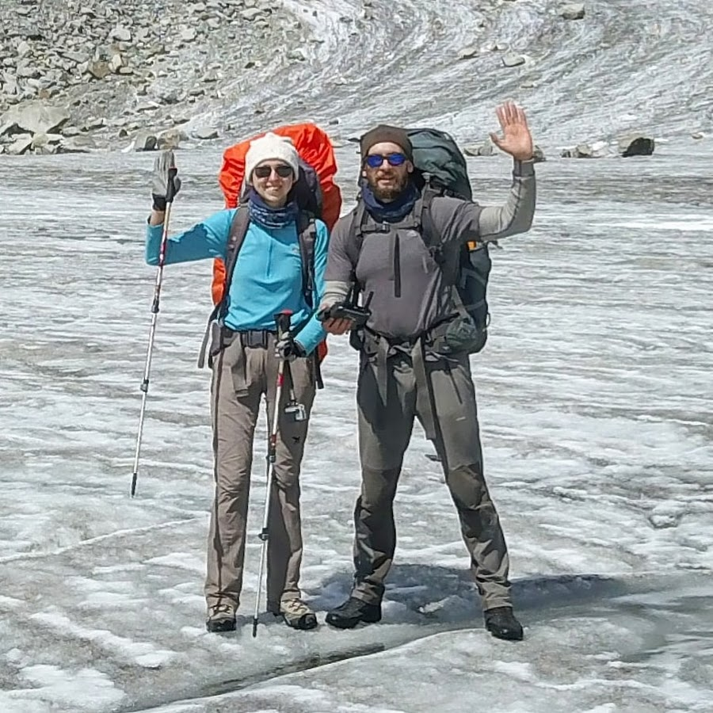
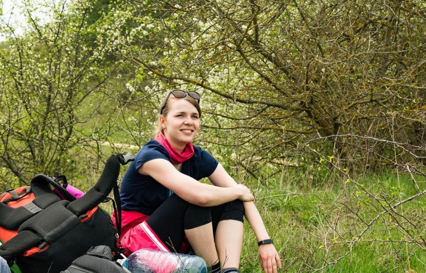
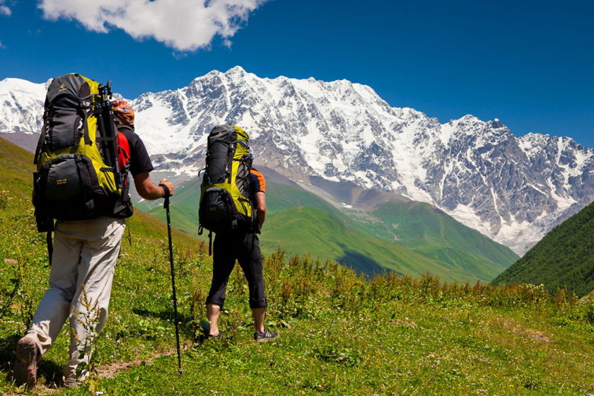
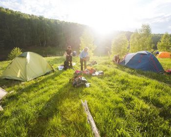
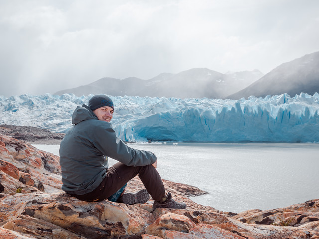
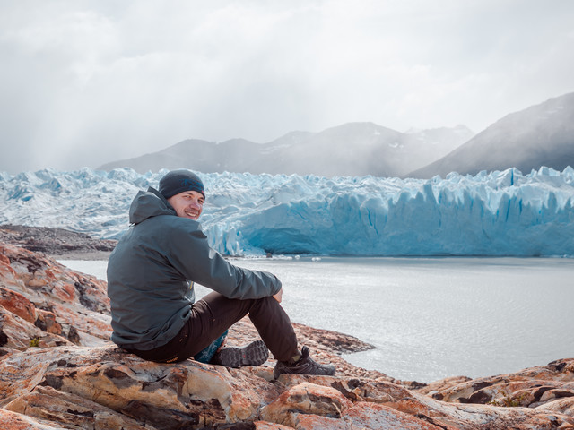
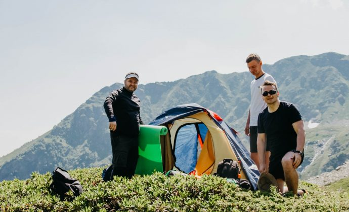
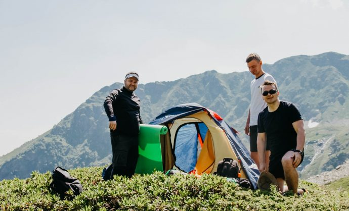

Наши инструкторы:
Ольга Кравцова
Олег Ивонов
Елена Гобарчук
Отзывы
Подать заявку
СПЛАВЫ ПО РЕКЕ АЙ График: май, июнь, июль, август.
отзывы
Подать заявку
Пешая тропа по Енгерской равнине График: июль, август.
отзывы
Подать заявку
 

Путешествие на Аляску График: июль, август,октябрь, ноябрь.
отзывы
Подать заявку
 

Пешая тропа по Уральской равнине График: июнь, июль, август, сентябрь.
отзывы
Подать заявку

8 (866) 81-22-22
8 (816) 341-92-33

Mouzenidis Travel@GMAIL.COM
Mouzenidis Travel@MAIL.RU
t.me/Mouzenidis Travel